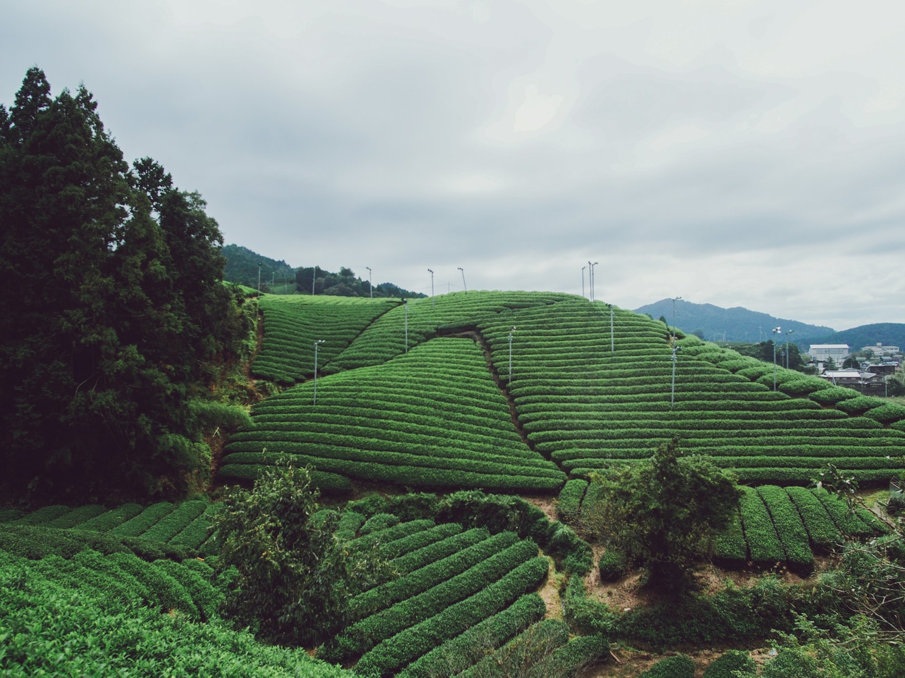
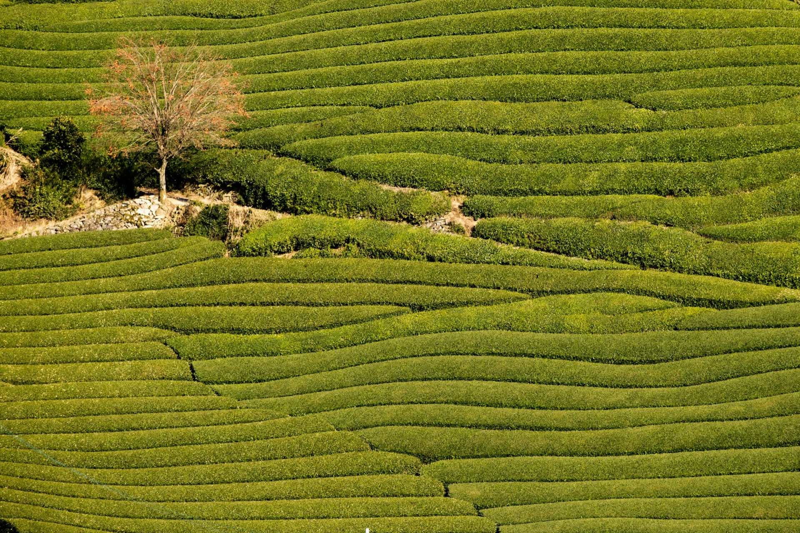

利き茶セット
各地で生産された煎茶・玉露の詰め合わせ。当苑だけのセットです。

八女茶の通販 福岡県春日市
100％純粋の八女茶を、産地別に産直価格で販売しています。農林大臣賞の受賞に携わった生産者の手による品ばかりです。
お湯を注ぐ
煎茶
八女地方で育った、産地ごとのお茶を。
お茶の3Dイメージです。色は目安です
当苑のお茶は、土壌づくりから製茶に至るまでこだわりの銘品です。「旨み」「薫り」、どれをとっても折り紙つき。一度味わっていただければ、お分かりいただけるはずです。
八女市・広川町・黒木町・上陽町・矢部村・星野村など、福岡県南部の八女地方で育ったお茶を、産地別にお届けします。
各地で生産された煎茶・玉露の詰め合わせ。当苑だけのセットです。
玉露で有名な奥八女・星野村のお茶を、ご家庭で気軽に。
昔ながらの味を、独自の手法で。

価格は現在のホームページの表示をもとにしています。
| ご注文 | オンラインショップ・お問い合わせフォームから |
|---|---|
| 卸販売 | 業務用のご相談も承ります |
お問い合わせ・ご質問は、メールでどうぞ。